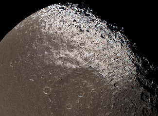
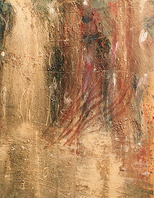

Les
techniques de projection

La peinture par
projection peut avoir pour vocation :
*
la mise en valeur de reliefs
(l'exemple cosmique ci-contre prouve que la nature ne s'en prive pas - il s'agit
des résultats de la projection d'hydrocarbures d'un violet opaque littéralement
soufflés sur le satellite saturnien Japet, faisant apparaître le
modelé de la surface, bien sensible au centre de
l'image, et redessinant les murailles des cratères).
Nasa, Cassini-Huygens, "You may
use NASA imagery, video and audio material for educational or informational
purposes, including photo collections, textbooks, public exhibits and Internet
Web pages."
*
l'application de peinture en
filaments, éclaboussures et autres formes plus ou moins aléatoires (exemple en
fin de page) ou bien de pâtes plus épaisses, créant elles-mêmes des reliefs
*
l'exécution de flous, de surfaces
parfaitement unies ou de transitions pouvant être précises ou lâchées (voir
particulièrement ci-dessous Projection séparée
d'un pigment et d'un liant).
Il s'agit bel et bien d'une
méthode de travail puissante que les artistes contemporains n'ont pas dédaignée,
comme les industriels d'ailleurs.
Il existe au moins trois méthodes de projection, dont chacune a des variantes :

* Projection de peinture : compresseur
aérographe, peinture à la soufflette,
bombes de peinture utilisées notamment pour les graphes/tags, brosses à
dents, seringue - utilisée par Pollock -, spatule dégoulinante, dripping, etc.
* Projection au compresseur
(pistolet) d'une poudre
préparée pour être vernie au vernis polyuréthane
ou tout autre produit du même type
(peinture typique pour carrosseries, métaux, plastiques, etc.). Il existe
des applications artistiques de ce procédé.
* Projections séparées d'un pigment (ou autre
élément en poudre) et
d'un liant, dans cet ordre, l'inverse ou les deux
mêlés. Cette technique
est accessible à presque tous les procédés de peinture et ne doit pas
être négligée car elle est fiable si, à la fin du travail, le pigment
est bien protégé, s'il a été correctement imbibé de liant.
Le pigment peut être jeté à la
main ou soufflé. Attention, cela nécessite des précautions particulières.
Voir lien. Par ailleurs
sur ce lien, un procédé est expliqué en détail.
Le liant peut
être versé ou bien projeté à l'aide d'une brosse ou tout autre moyen. Un diluant, un épaississant, n'importe quel
adjuvant plus ou moins liquide peut également être versé ou projeté.
Certains effets peuvent être obtenus par retrait dans le frais (voir photo
ci-dessus à droite,
huile et Caparol ® sur papier, or et pigments, tableau travaillé à la
spatule, puis aux doigts - gantés - au finale).
* Projection de mortier :
voir Le crépi.
Retour
début de page